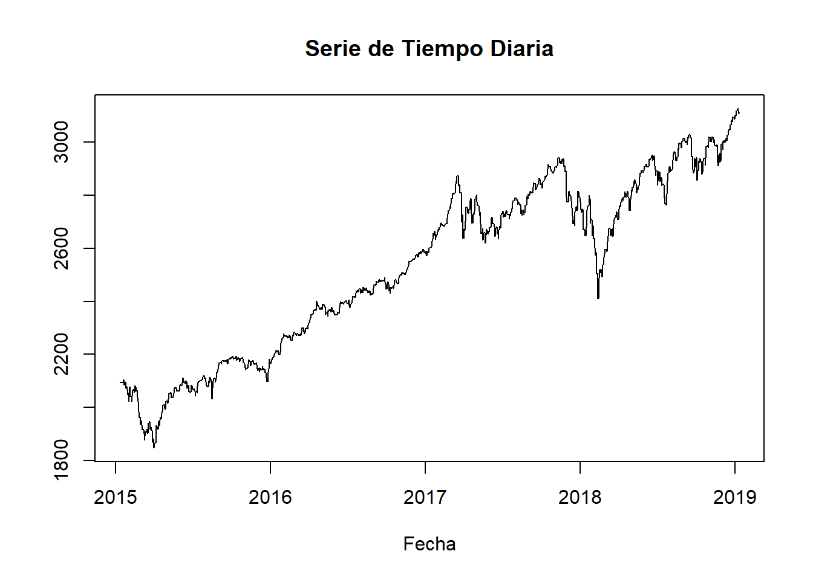
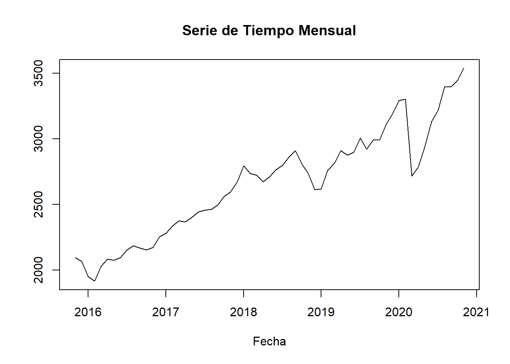
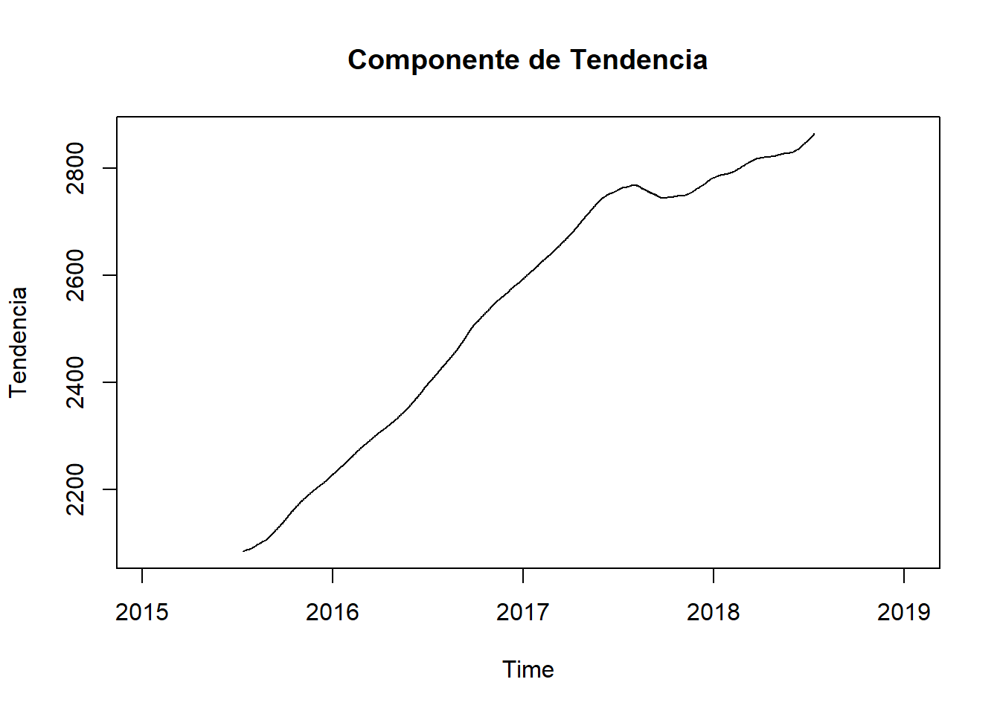
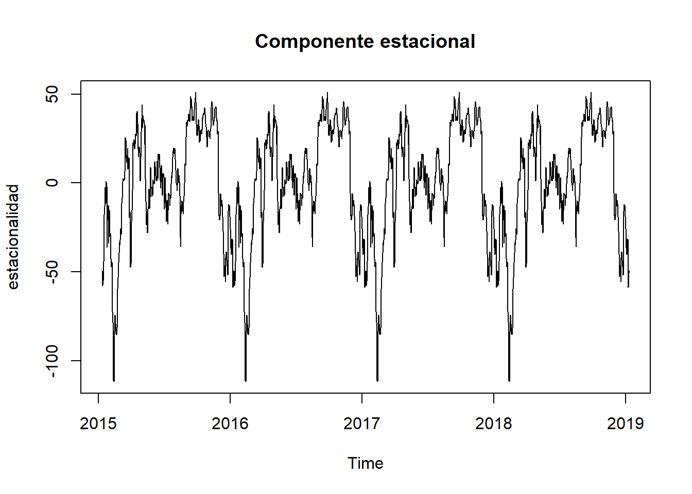
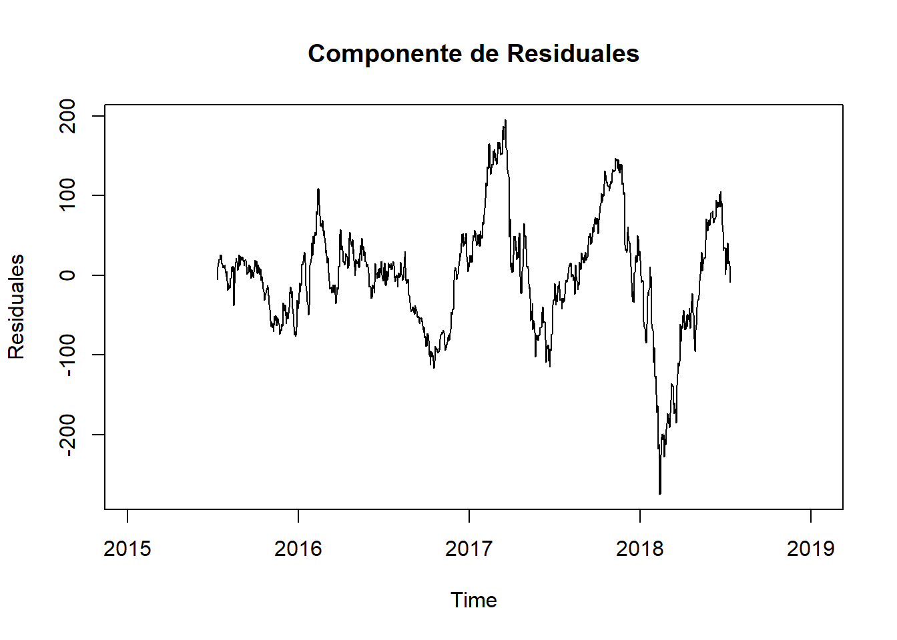

# Carga de paquetes necesariosknitr::opts_chunk$set(echo =TRUE)knitr::opts_chunk$set(message =FALSE)knitr::opts_chunk$set(warning =FALSE)library(tidyverse)
Warning: package 'tidyverse' was built under R version 4.3.3
Warning: package 'ggplot2' was built under R version 4.3.3
Warning: package 'tibble' was built under R version 4.3.3
Warning: package 'tidyr' was built under R version 4.3.3
Warning: package 'readr' was built under R version 4.3.3
Warning: package 'purrr' was built under R version 4.3.3
Warning: package 'dplyr' was built under R version 4.3.3
Warning: package 'stringr' was built under R version 4.3.3
Warning: package 'forcats' was built under R version 4.3.3
Warning: package 'lubridate' was built under R version 4.3.3
Código
library(lubridate)library(forecast)
Warning: package 'forecast' was built under R version 4.3.3
Código
library(xts)
Warning: package 'xts' was built under R version 4.3.3
Warning: package 'zoo' was built under R version 4.3.3
Dataset
Se extrajo información de Yahoo Finance sobre índice S&P 500 desde el 2015 al 2020, junto con la información del precio de cierre del conjunto de datos disponible, aunque también está disponible otra información como el precio de apertura, el precio de cierre ajustado, etc. Mas información consultar aquí
Código
data <-read_csv('C:/Users/Pame/Desktop/intro_ia_pda/data/yahoo_stock.csv')glimpse(data)
serie_tiempo<-ts(data$High, start =c(2015, 11, 23), end=c(2019, 11, 01), frequency=365)# Graficar la serie de tiempoplot(serie_tiempo, main ="Serie de Tiempo Diaria", xlab ="Fecha", ylab ="")

Código
# Resampleo para obtener información semanalweekly_data <-period.apply(data, endpoints(data, "weeks"), mean)head(weekly_data)
ts_monthly <-ts(monthly_data$High, start =c(2015,11), frequency =12)# Graficar la serie de tiempoplot(ts_monthly, main ="Serie de Tiempo Mensual", xlab ="Fecha", ylab ="")

Descomposición de la serie temporal
Código
descomposicion <-decompose(serie_tiempo)# Componente de tendenciaplot(descomposicion$trend, main ="Componente de Tendencia", ylab ="Tendencia")

Código
plot(descomposicion$seasonal, main ="Componente estacional", ylab ="estacionalidad")

Código
plot(descomposicion$random, main ="Componente de Residuales", ylab ="Residuales")

ACF y PACF
Autocorrelation Function (ACF) = autocorrelación entre la serie de tiempo y una retrasada de si misma —> Moving Average Model (MA)
Proceso de promedio móvil (MA), un proceso en el que el valor actual de la serie se define como una combinación lineal de errores pasados. Suponemos que los errores se distribuyen independientemente con la distribución normal.
ACF define el orden MA(q)
Partial Autocorrelation Function = La autocorrelación parcial mide la correlación entre dos variables separadas por k periodos cuando no se considera la dependencia creada por los retardos intermedios existentes entre ambas.
Proceso autorregresivo (AR) , se dice que una serie de tiempo es AR cuando el valor presente de la serie de tiempo se puede obtener utilizando valores anteriores de la misma serie de tiempo, es decir, el valor presente es el promedio ponderado de sus valores pasados.
PACF define AR (p)
Código
acf(serie_tiempo, lag.max =200, plot=T)
Código
pacf(serie_tiempo, main ="Gráfico de ACF", lag.max =30)
D:orden de la diferenciación estacional. D=1 calcula el primer orden de la diferencia estacional
Q: orden de la media móvil estacional. Q=1 usa errores de primer orden en el modelo
S: Período estacional único
Código
# Ajustar un modelo ARIMA automáticamentemodelo_autoarima <-auto.arima(serie_tiempo,seasonal=TRUE)# Resumen del modelo ARIMA seleccionado automáticamentesummary(modelo_autoarima)
Series: serie_tiempo
ARIMA(0,1,1) with drift
Coefficients:
ma1 drift
0.0481 0.6968
s.e. 0.0263 0.3811
sigma^2 = 193.3: log likelihood = -5913.47
AIC=11832.95 AICc=11832.96 BIC=11848.81
Training set error measures:
ME RMSE MAE MPE MAPE MASE
Training set 0.001512134 13.88835 8.256313 -0.002207855 0.3257584 0.02986784
ACF1
Training set -0.0002433824
Código
# Número de pasos hacia el futuro para hacer la predicciónn_pasos <-70# Reemplaza con el número de pasos que desees predecir# Ajustar un modelo ARIMA con los parámetros especificadosmodelo_arima <-arima(serie_tiempo, order =c(0, 1, 1), seasonal =c(0,1,0))# Hacer la predicciónprediccion <-forecast(modelo_arima, h = n_pasos, level =0.95)# Imprimir la predicción con la banda de confianza# Crear un gráfico de las predicciones con banda de confianzaplot(prediccion, main ="Predicción con Banda de Confianza")
# Fecha inicialfecha_inicial <-as.Date("2020-11-20")# Generar una secuencia de 5 días posterioresfechas_posteriores <-seq(from = fecha_inicial, by ="days", length.out =30)# Imprimir las fechas posterioresprint(as.Date(fechas_posteriores))
# Hacer la predicciónprediccion_ <-forecast(modelo_arima, h =30, level =0.95)final <-cbind(date_time=format(fechas_posteriores),mean= prediccion_[["mean"]],prediction_lower = prediccion_[["lower"]],prediction_upper= prediccion_[["upper"]])
---title: "Introducción a las Series Temporales"author: "Pamela E. Pairo"lang: esdescription: | Trabajo Práctico n°4format: html: theme: flatly code-fold: show code-tools: true toc: true toc-location: left---```{r, message=FALSE}# Carga de paquetes necesariosknitr::opts_chunk$set(echo = TRUE)knitr::opts_chunk$set(message = FALSE)knitr::opts_chunk$set(warning = FALSE)library(tidyverse)library(lubridate)library(forecast)library(xts)```## DatasetSe extrajo información de _Yahoo Finance_ sobre índice S&P 500 desde el 2015 al 2020, junto con la información del precio de cierre del conjunto de datos disponible, aunque también está disponible otra información como el precio de apertura, el precio de cierre ajustado, etc. Mas información consultar [aquí](https://www.kaggle.com/datasets/arashnic/time-series-forecasting-with-yahoo-stock-price?resource=download)```{r}data <-read_csv('C:/Users/Pame/Desktop/intro_ia_pda/data/yahoo_stock.csv')glimpse(data)``````{r}serie_tiempo<-ts(data$High, start =c(2015, 11, 23), end=c(2019, 11, 01), frequency=365)# Graficar la serie de tiempoplot(serie_tiempo, main ="Serie de Tiempo Diaria", xlab ="Fecha", ylab ="")``````{r}# Resampleo para obtener información semanalweekly_data <-period.apply(data, endpoints(data, "weeks"), mean)head(weekly_data)``````{r}# Resampleo para obtener información mensualmonthly_data <-period.apply(data, endpoints(data, "months"), mean)head(monthly_data, 10)``````{r}ts_monthly <-ts(monthly_data$High, start =c(2015,11), frequency =12)# Graficar la serie de tiempoplot(ts_monthly, main ="Serie de Tiempo Mensual", xlab ="Fecha", ylab ="")```## Descomposición de la serie temporal```{r}descomposicion <-decompose(serie_tiempo)# Componente de tendenciaplot(descomposicion$trend, main ="Componente de Tendencia", ylab ="Tendencia")``````{r}plot(descomposicion$seasonal, main ="Componente estacional", ylab ="estacionalidad")``````{r}plot(descomposicion$random, main ="Componente de Residuales", ylab ="Residuales")```## ACF y PACF**Autocorrelation Function (ACF)** = autocorrelación entre la serie de tiempo y una retrasada de si misma ---> Moving Average Model (MA)Proceso de promedio móvil (MA), un proceso en el que el valor actual de la serie se define como una combinación lineal de errores pasados. Suponemos que los errores se distribuyen independientemente con la distribución normal.**ACF define el orden MA(q)****Partial Autocorrelation Function** = La autocorrelación parcial mide la correlación entre dos variables separadas por k periodos cuando no se considera la dependencia creada por los retardos intermedios existentes entre ambas.**Proceso autorregresivo (AR)** , se dice que una serie de tiempo es AR cuando el valor presente de la serie de tiempo se puede obtener utilizando valores anteriores de la misma serie de tiempo, es decir, el valor presente es el promedio ponderado de sus valores pasados.PACF define AR (p)```{r}acf(serie_tiempo, lag.max =200, plot=T)``````{r}pacf(serie_tiempo, main ="Gráfico de ACF", lag.max =30)```## ARIMA y SARIMA\begin{align*}\LARGE \mathbf{ARIMA} (p, d, q) {x} (P, D, Q)S\end{align*}Elementos de la tendencia:- p: orden autoregresivo- d: orden de la diferenciación (_differencing_)- q: orden de la media móvilElementos de la estacionalidad:- P: orden autoregresivo estacional.- D:orden de la diferenciación estacional. D=1 calcula el primer orden de la diferencia estacional- Q: orden de la media móvil estacional. Q=1 usa errores de primer orden en el modelo- S: Período estacional único```{r}# Ajustar un modelo ARIMA automáticamentemodelo_autoarima <-auto.arima(serie_tiempo,seasonal=TRUE)# Resumen del modelo ARIMA seleccionado automáticamentesummary(modelo_autoarima)``````{r}# Número de pasos hacia el futuro para hacer la predicciónn_pasos <-70# Reemplaza con el número de pasos que desees predecir# Ajustar un modelo ARIMA con los parámetros especificadosmodelo_arima <-arima(serie_tiempo, order =c(0, 1, 1), seasonal =c(0,1,0))# Hacer la predicciónprediccion <-forecast(modelo_arima, h = n_pasos, level =0.95)# Imprimir la predicción con la banda de confianza# Crear un gráfico de las predicciones con banda de confianzaplot(prediccion, main ="Predicción con Banda de Confianza")```## Exponential Smoothing```{r}ses_<- forecast::ses(serie_tiempo,h =70,seasonal="additive")autoplot(ses_)``````{r}holt_ <- forecast::holt(serie_tiempo,h =50,seasonal="multiplicative")autoplot(holt_)```## Guardo las predicciones en un csvPrimero se definen las fechas```{r}# Fecha inicialfecha_inicial <-as.Date("2020-11-20")# Generar una secuencia de 5 días posterioresfechas_posteriores <-seq(from = fecha_inicial, by ="days", length.out =30)# Imprimir las fechas posterioresprint(as.Date(fechas_posteriores))```Se crea el dataframe```{r}# Hacer la predicciónprediccion_ <-forecast(modelo_arima, h =30, level =0.95)final <-cbind(date_time=format(fechas_posteriores),mean= prediccion_[["mean"]],prediction_lower = prediccion_[["lower"]],prediction_upper= prediccion_[["upper"]])``````{r}write.csv(final, file ="predicciones.csv", row.names =FALSE)```